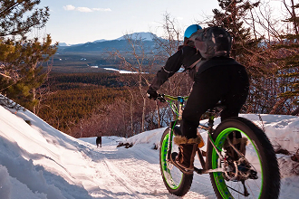

voir l'hiver autrement!
Vivez des sensations uniques sur nos sentiers de fat bike soigneusement aménagés.
voir l'hiver autrement!
Vivez des sensations uniques sur nos sentiers de fat bike soigneusement aménagés.
Nos circuits Fat Bike
Pensés pour tous les niveaux et toutes les envies, nos parcours vous offrent des expériences variées au cœur de paysages hivernaux exceptionnels. Adrénaline, défi technique ou balade contemplative — il y a un circuit pour vous.

Descente
Partez à la découverte de sentiers sinueux à travers la forêt enneigée. Idéal pour améliorer votre endurance tout en profitant pleinement de la nature.

Cross-country
Des pentes grisantes et une bonne dose d’adrénaline. Parfait pour les amateurs de sensations fortes.

Acrobatique
Des pentes grisantes et une bonne dose d’adrénaline. Parfait pour les amateurs de sensations fortes.